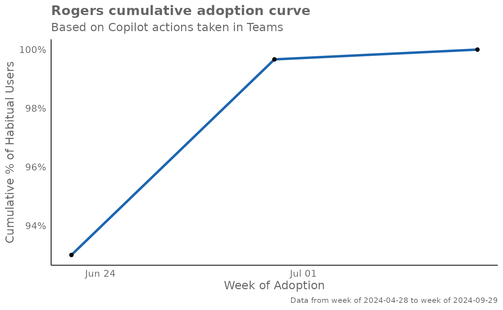
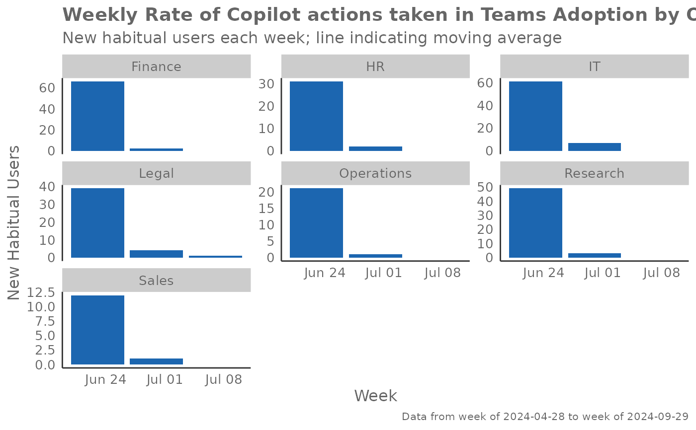
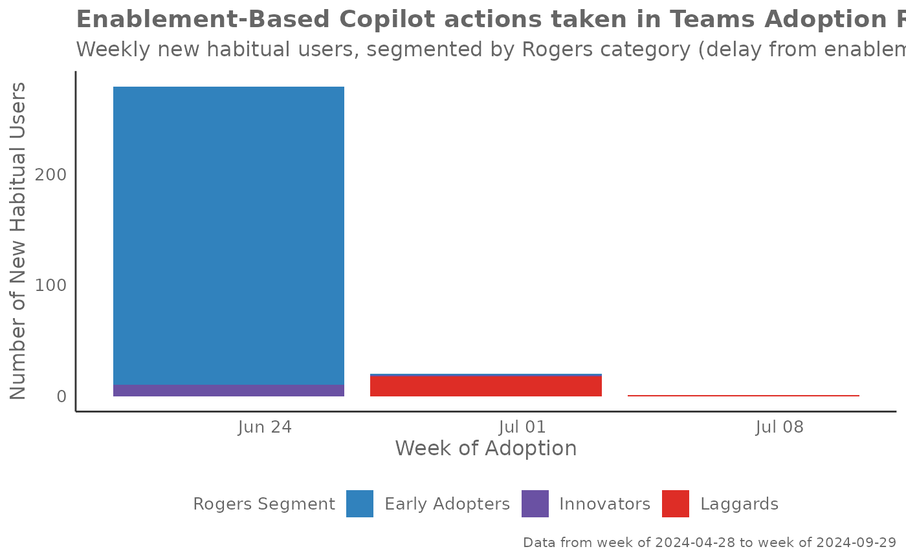

Creates various visualizations based on the Rogers adoption curve theory,
analyzing the adoption patterns of Copilot usage. The function identifies
habitual users using the identify_habit() function and then creates
adoption curve visualizations based on different time frames and
organizational groupings.
Usage
create_rogers(
data,
hrvar = NULL,
metric,
width = 9,
max_window = 12,
threshold = 1,
start_metric,
return = "plot",
plot_mode = 1
)Arguments
- data
Data frame containing Person Query data to be analyzed. Must contain
PersonId,MetricDate, and the specified metrics.- hrvar
Character string specifying the HR attribute or organizational variable to group by. Default is
NULL, for no grouping.- metric
Character string containing the name of the metric to analyze for habit identification, e.g. "Total_Copilot_actions". This is passed to
identify_habit().- width
Integer specifying the number of qualifying counts to consider for a habit. Passed to
identify_habit(). Default is 9.- max_window
Integer specifying the maximum unit of dates to consider a qualifying window for a habit. Passed to
identify_habit(). Default is 12.- threshold
Numeric value specifying the minimum threshold for the metric to be considered a qualifying count. Passed to
identify_habit(). Default is 1.- start_metric
Character string containing the name of the metric used for determining enablement start date. This metric should track when users first gained access to the technology being analyzed. The function identifies the earliest date where this metric is greater than 0 for each user as their "enablement date". This is then used in plot modes 3 and 4 to calculate time-to-adoption and Rogers segment classifications. The suggested variable is "Total_Copilot_enabled_days", but any metric that indicates access or licensing status can be used (e.g., "License_assigned_days", "Access_granted").
- return
Character vector specifying what to return. Valid inputs are "plot", "data", and "table". Default is "plot".
- plot_mode
Integer or character string determining which plot to return. Valid inputs are:
1 or "cumulative": Rogers Adoption Curve showing cumulative adoption
2 or "weekly": Weekly Rate of adoption showing new habitual users
3 or "enablement": Enablement-based adoption rate with Rogers segments
4 or "cumulative_enablement": Cumulative adoption adjusted for enablement
Default is 1.
Value
Returns a 'ggplot' object by default when 'plot' is passed in return.
When 'table' is passed, a summary table is returned as a data frame.
When 'data' is passed, the processed data with habit classifications is returned.
Details
This function provides four distinct plot modes to analyze adoption patterns:
Plot Mode 1 - Cumulative Adoption Curve: Shows the classic Rogers adoption curve with cumulative percentage of habitual users over time. This S-shaped curve helps identify the pace of adoption and when saturation begins. Steep sections indicate rapid adoption periods, while flat sections suggest slower uptake or natural limits.
Plot Mode 2 - Weekly Adoption Rate: Displays the number of new habitual users identified each week, with a 3-week moving average line to smooth volatility. This view helps identify adoption spikes, seasonal patterns, and the natural ebb and flow of user onboarding. High bars indicate successful onboarding periods.
Plot Mode 3 - Enablement-Based Adoption: Analyzes adoption relative to when users were first enabled (had access). Users are classified into Rogers segments (Innovators, Early Adopters, Early/Late Majority, Laggards) based on how quickly they adopted after enablement. This helps understand the natural distribution of adoption speed within your organization.
Plot Mode 4 - Cumulative Enablement-Adjusted: Similar to Mode 1 but only includes users who had enablement data, providing a more accurate view of adoption among those who actually had access to the technology. This removes noise from users who may not have been properly enabled.
Interpretation Guidelines:
Early steep curves suggest strong product-market fit
Plateaus may indicate training needs or feature limitations
Seasonal patterns often reflect organizational training cycles
Rogers segments help identify user personas for targeted interventions
See also
Other Visualization:
afterhours_dist(),
afterhours_fizz(),
afterhours_line(),
afterhours_rank(),
afterhours_summary(),
afterhours_trend(),
collaboration_area(),
collaboration_dist(),
collaboration_fizz(),
collaboration_line(),
collaboration_rank(),
collaboration_sum(),
collaboration_trend(),
create_bar(),
create_bar_asis(),
create_boxplot(),
create_bubble(),
create_dist(),
create_fizz(),
create_inc(),
create_line(),
create_line_asis(),
create_period_scatter(),
create_rank(),
create_sankey(),
create_scatter(),
create_stacked(),
create_tracking(),
create_trend(),
email_dist(),
email_fizz(),
email_line(),
email_rank(),
email_summary(),
email_trend(),
external_dist(),
external_fizz(),
external_line(),
external_rank(),
external_sum(),
hr_trend(),
hrvar_count(),
hrvar_trend(),
keymetrics_scan(),
meeting_dist(),
meeting_fizz(),
meeting_line(),
meeting_rank(),
meeting_summary(),
meeting_trend(),
one2one_dist(),
one2one_fizz(),
one2one_freq(),
one2one_line(),
one2one_rank(),
one2one_sum(),
one2one_trend()
Author
Chris Gideon chris.gideon@microsoft.com
Examples
# Basic Rogers adoption curve
create_rogers(
data = pq_data,
metric = "Copilot_actions_taken_in_Teams",
plot_mode = 1
)

# Weekly adoption rate by organization
create_rogers(
data = pq_data,
hrvar = "Organization",
metric = "Copilot_actions_taken_in_Teams",
plot_mode = 2
)
#> Warning: Removed 14 rows containing missing values or values outside the scale range
#> (`geom_line()`).
#> `geom_line()`: Each group consists of only one observation.
#> ℹ Do you need to adjust the group aesthetic?

# Enablement-based adoption
create_rogers(
data = pq_data,
metric = "Copilot_actions_taken_in_Teams",
start_metric = "Total_Copilot_enabled_days",
plot_mode = 3
)
